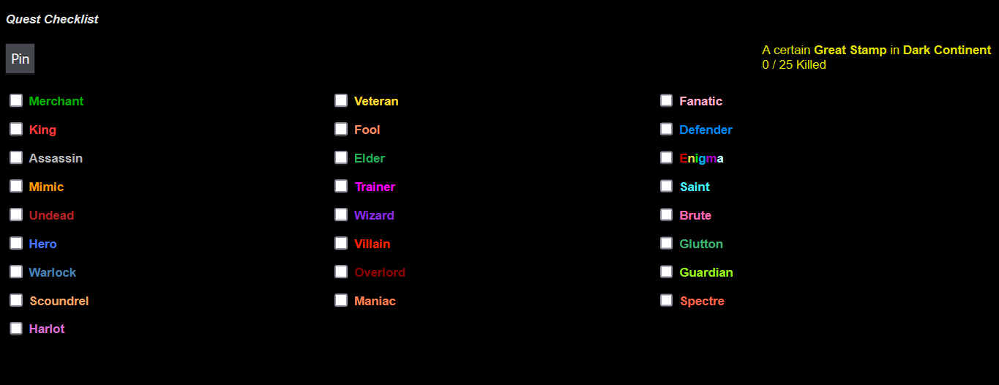

Quests represent activities offering rewards including experience, gold, gems, shadows, and accessories. Players access quests at the QuestMaster Hut (coordinates 1,1) starting at level 25.
Quest Generation and Rotation
"New quests are generated every hour, and quests only stick around for 2h total." The system announces rotations hourly with a message indicating fresh challenges are available.
How Quests Function
Players sign up for quests targeting special monsters within designated zones. Upon completion, a public announcement displays the achievement and any special item rewards obtained.
Quest Board Information
| Column | Details |
|---|---|
| Defeat | Monster name and zone location |
| Reward | Experience and gold; occasionally gems, shadows, or accessories |
| Status | Active, You Signed Up, or Completed |
| Time Left | 1h (fresh) or 0h (expiring soon) |
| Level Limits | Minimum and maximum level requirements |
Quest Signup Process
Visit the quest board, select a quest, then travel to the specified zone hunting special monsters. Players can only maintain one active quest simultaneously and compete against others for completion. An automated message notifies players if another player completes their quest.
Quest Checklist

The Quests hotbar tab displays all possible special monsters needed. Boxes automatically check upon defeating required monsters. The display shows current target mob and zone details.
Quest Bounty System
| Achievement | Bonus |
|---|---|
| Each special monster killed | +2% |
| Every 10 special monsters killed | +5% bonus |
| First special monster is quest completion | +15% flat |
| Maximum possible | 60% |
Quest Timer by Level Range
| Minimum Level | Maximum Level | Timer (Hours) |
|---|---|---|
| 1 | 599 | 3 |
| 600 | 1,499 | 4 |
| 1,500 | 2,999 | 6 |
| 3,000 | 4,999 | 7 |
| 5,000 | 9,999 | 8 |
| 10,000 | 24,999 | 10 |
| 25,000 | 99,999 | 12 |
| 100,000 | 499,999 | 14 |
| 500,000+ | N/A | 16 |
Malachite Quest Bribe
| Grade | Reduction (Hours) | Level Range |
|---|---|---|
| 1 | 1 | 1-600 |
| 2 | 1 | 601-1,500 |
| 3 | 2 | 1,501-3,000 |
| 4 | 3 | 3,001-5,000 |
| 5 | 4 | 5,001-10,000 |
| 6 | 5 | 10,001-60,000 |
| 7 | 6 | 60,001-350,000 |
| 8 | 7 | 350,001-1,500,000 |
| 9 | 8 | 1,500,001+ |
Quest Day Benefits
Four times monthly (7th, 14th, 21st, 28th), a 24-hour Quest Day occurs where active timers reset, quest completions grant 2-hour timers, and all quests provide 20% enhanced experience and gold.